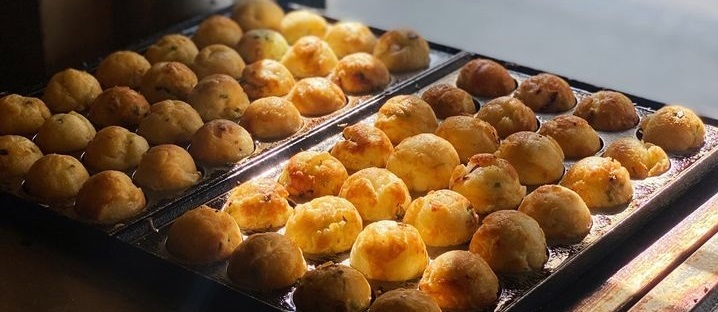

About Us
Welcome to the flavorful world of Octogo Takoyaki - St. Joseph Las Piñas, where passion meets perfection in every bite! At Octogo Takoyaki - St. Joseph Las Piñas, we pride ourselves on crafting the finest takoyaki, each ball bursting with authentic Japanese taste and culinary expertise.
Immerse yourself in the delightful symphony of flavors and textures as our skilled chefs blend the freshest ingredients to create these savory octopus-filled delights. Our takoyaki is a fusion of tradition and innovation, combining the time-honored techniques of Japanese street food with our unique twist, ensuring a gastronomic experience like no other.
Picture golden-brown orbs, impeccably cooked to a crispy exterior, giving way to a soft, gooey center that cradles a succulent piece of tender octopus. Our menu features an array of mouthwatering options, from classic takoyaki to inventive fusion flavors that will tantalize your taste buds and leave you craving more.
At Octogo Takoyaki - St. Joseph Las Piñas, we prioritize quality and authenticity, sourcing only the finest ingredients to ensure that each bite transports you to the vibrant streets of Osaka. Whether you're a takoyaki enthusiast or a newcomer to this Japanese culinary sensation, our commitment to excellence guarantees a memorable dining experience.
Step into our welcoming establishment, where the aroma of sizzling batter and savory fillings beckons you to indulge in a moment of culinary bliss. Whether you're grabbing a quick snack on the go or savoring a leisurely meal with friends and family, Octogo Takoyaki - St. Joseph Las Piñas is your go-to destination for irresistibly delicious takoyaki.
Join us on a gastronomic journey that celebrates the art of takoyaki, where every order is a testament to our dedication to providing the finest Japanese street food experience. At Octogo Takoyaki - St. Joseph Las Piñas, we don't just serve takoyaki; we deliver an unforgettable culinary adventure that will keep you coming back for more.